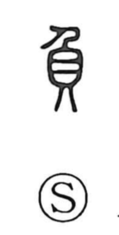

負

Uncategorized
Kun: ou, obu, makeru, makasu | On: fu, bu
to bear ・ to carry on the back ・ burden ・ to take responsibility ・ to lose
Explanation
This compound character brings together the person and shell components, picturing someone carrying shells on the back. From that image it first means to bear or to carry on one’s back. By natural extension it expresses taking on a load or responsibility (as in terms for burden and charge), and also entrusting or transferring a duty to another. In later usage it further came to convey ideas like turning one’s back or opposing, and being defeated or losing, through phonetic extension where 負 stands in for 背 (“back; to turn one’s back”) and 敗 (“defeat”), whose readings are closely related.